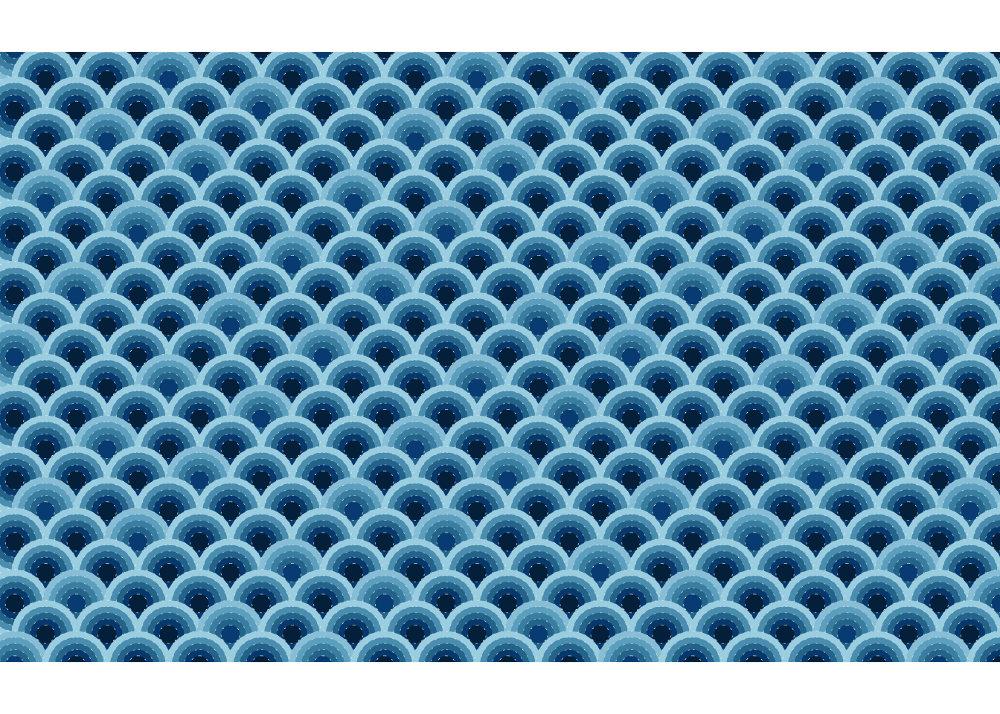

The Seigaiha (青海波) motif, literally translated as “blue ocean waves” is a classic Japanese pattern used in textiles, ceramics, kimono and art. It features stylized waves created with concentric circles forming arches. I just learned that it symbolizes surges of good luck - delightful and thought great start to have it for blog post.
青 = Blue
海 = Ocean
波 = Wave
Using ggplot2 and additional packages like ggforce and cowplot, I was able to recreate this timeless design programmatically.
Walk Through of How I Created the Pattern
First need to load up the required libraries. Recently, I discovered package called annotater , which let you add annotation to the packages you use in script! It’s such a useful tool - future me (and anyone collaborating on my code) will likely thank me for using it.
Code
library(tidyverse) # Easily Install and Load the 'Tidyverse' library(ggforce) # Accelerating 'ggplot2' library(cowplot) # Streamlined Plot Theme and Plot Annotations for 'ggplot2' library(gt) # Easily Create Presentation-Ready Display Tables col10 <-str_split("012a4a-013a63-01497c-014f86-2a6f97-2c7da0-468faf-61a5c2-89c2d9-a9d6e5","-")col10_pal <-str_c("#",col10 |>unlist())
Generating the Grid Data
We create a grid of coordinates to serve as the base for our motif. To archieve the characteristic offset of Seigaiha waves, we adjust the x coordinates for odd rows:
Code
df <-expand_grid(x =seq(-16, 16, by =2), y =seq(-10, 10, by =1)) |>arrange(y,x) |>mutate(y_odd=(y%%2==1)) |>mutate(idx=row_number()-1) |>mutate(x=if_else(y_odd,x+1,x))
Expanding for Circle Sizes
The radii of the circles vary in five steps. It could be smaller or larger. I could’ve also add randomness to it too, but I just kept it constant for now.
Using geom_circle from ggforce, we layer circles over the grid. We map the fill colour to the adjusted radius (r_var) for a slight gradeient effect:
Code
df_long |>arrange(-y, idx, desc(r)) |>ggplot() +geom_circle(aes(x0 = x,y0 = y,r = r,fill = r_var ## just wanted to give bit of variance ),linewidth =0.1,color ="#fffff3de",linetype =3 ) +coord_fixed(clip ="on",xlim =c(-15, 14.5),ylim =c(-9, 9)) +theme_nothing() +scale_fill_gradientn(colors = col10_pal) +scale_color_gradientn(colors = col10_pal)

Final Touch
The theme_nothing() from cowplot removes all unnecessary visual elements (axes, labels etc.), leaving only the motif. I’ve adjusted xlim and ylim so that I’m clipping out the extra circles.